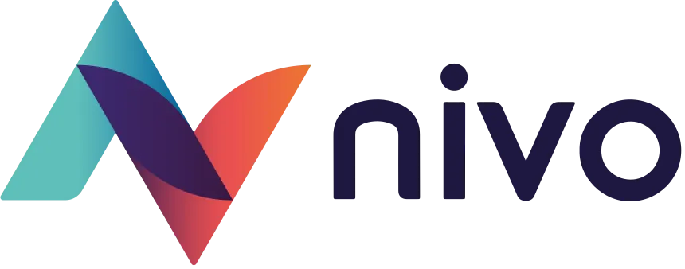

Expérience Professionnelle
2023 - 2025

Alternant Développeur Full Stack
SNCF - Technicentre Sud-Est Européen (TSEE)
Alternance dans le cadre de mon Master Informatique à Le Rebours. Collaboration sur des projets d'envergure pour la maintenance et la modernisation des applications métier de la SNCF.
Principales réalisations :
- • Maintenance et migration du code PHP vers la version 8
- • Refactorisation complète des codes existants pour améliorer leur maintenabilité
- • Reconstruction de l'architecture serveur selon les normes SNCF
- • Dockerisation des applications
- • Migration vers un front-end en Angular 20 et un back-end en Spring Boot
- • Mise en place d'un reverse proxy pour le filtrage et la redirection des requêtes
- • Déploiement d'une instance GitLab dockerisée
2022 - 2023

Alternant Chargé de Projet Informatique
DGEFP - Délégation Générale à l'Emploi et à la Formation Professionnelle
Alternance dans le cadre de ma Licence Informatique. Conception et pilotage de projets informatiques pour la DGEFP.
Principales réalisations :
- • Conception de deux projets et prise en charge du suivi d'un troisième projet
- • Pilotage des trois projets avec mise en place de tous les concepts de gestion de projet (WBS, OBS, SWOT, RACI, EVM...)
- • Mise en place d'une démarche en urgence à l'aide de l'outil Démarche Simplifiée
- • Programmation Python pour récupérer les données de la démarche
- • Formation Excel pour aider à la création de macros
- • Familiarisation avec les environnements administratifs et les contraintes spécifiques aux projets publics
Janv - Fév 2022

Développeur d'Applications Métier
Gesta Partners
Stage dans le cadre du BTS SIO. Conception d'outils métier pour le service comptabilité et développement de solutions techniques avancées.
Principales réalisations :
- • Conception d'un outil/Hub de facturation pour le service comptabilité
- • Création d'une interface CLI et récupération des informations clients en base de données (SQL Server)
- • Génération de factures en format Excel et création d'une interface graphique (WinForm) pour gérer les données de facturation
- • Évaluation théorique de la sécurité des serveurs : SQL injection, Cross Site Scripting (XSS)
- • Création d'un outil de recherche récursif d'images dans des dossiers locaux (System IO) pour redimensionner on-the-fly (C#, Bitmap)
- • Documentation du code et support N+1 aux utilisateurs
Mai - Juin 2021

Développeur Web
nivo-web
Première expérience professionnelle dans le domaine du développement web. Découverte du monde professionnel et des relations clients.
Principales réalisations :
- • Création de logos et thèmes de sites web
- • Mise en place d'une boutique e-commerce de pêche avec ajout dynamique de produits en backoffice via API WooCommerce
- • Intégration des produits en front dans un grid avec lazy loading (appels AJAX pour chargement des pages suivantes)
- • Travail en collaboration avec l'UX designer
- • Intégration des maquettes en front avec Elementor et modifications CSS/HTML/JS
- • Refonte graphique d'un site web en collaboration avec l'équipe design
- Support N+1 aux clients, documentation, intégration des outils de Google Analytics